LiteIDE搭建Go语言开发环境
LiteIDE 是一款专为Go语言开发而设计的开源、跨平台、轻量级集成开发环境（IDE），基于 Qt 开发（一个跨平台的 C++ 框架），支持 Windows、Linux 和 Mac OS X 平台。LiteIDE 的第一个版本发布于 2011 年 1 月初，是最早的面向Go语言的 IDE 之一。至今为止，LiteIDE 已经发布到版本 X36。
本节我们需要下载 Windows 版本的 LiteIDE 安装包。
因为 LiteIDE 是绿色版的，无需安装，所以下载完成后，得到的是一个 ZIP 格式的压缩文件。
将压缩包解压到任意目录，这里我们将压缩包解压到了 D 盘，解压后会得到一个名为“liteide”的文件夹。
进入 LiteIDE 文件夹中的 bin 文件夹，可以在 bin 文件夹中找到名为“liteide.exe”的文件，它就是 LiteIDE 的启动程序。
双击运行“liteide.exe”就可以正常打开 LiteIDE 了，为了方便以后的使用，建议大家在桌面创建 LiteIDE 的快捷方式（在“liteide.exe”上右键→“发送到”→“桌面快捷方式”）。
配置当前运行环境，点击“工具”，在下拉菜单中选择“编辑当前环境”，如下图所示。
在打开的文件中找到“GOROOT=xxx”，并将其修改为环境变量中 GOROOT 对应的值，如下所示。（注意：修改完成后记得保存）
如果记不清了也没关系，可以在 CMD 窗口中使用
添加自定义 GOPATH，在“工具”菜单中找到“管理 GOPATH/Modules...”，如下图所示。（注意：因为系统中已经包含了一个默认的 GOPATH，所以此步骤不是必须的，了解即可）
在弹出的窗口中找到“使用自定义 GOPATH”，将其勾选，然后点击“添加目录”，选择合适的目录即可。
首先，在“文件”菜单中选择“新建”，在弹出的窗口中，选择系统默认的 GOPATH 路径，模板选择“Go1 Command Project”，最后填写项目名称，并选择合适的目录，确认无误后点击“OK”。
新建好的项目是下面这样的，编辑器自动为我们创建了两个文件，并在“main.go”中生成了简单的代码。
点击编辑器右上方的“BR”按钮，就可以运行“main.go”中的代码，同时会在当前目录下生成一个 .exe 的可执行文件。
下载 LiteIDE
大家可以通过下面三种方式来下载 LiteIDE 安装包：- 开源软件平台：https://sourceforge.net/projects/liteide/files/；
- GitHub：https://github.com/visualfc/liteide/releases；
- 百度网盘：https://pan.baidu.com/s/1wYHSEfG1TJRC2iOkE_saJg（密码：jzrc）。
本节我们需要下载 Windows 版本的 LiteIDE 安装包。
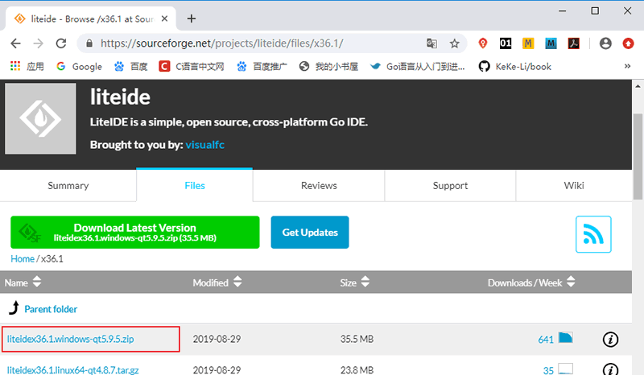
下载 LiteIDE
下载 LiteIDE
因为 LiteIDE 是绿色版的，无需安装，所以下载完成后，得到的是一个 ZIP 格式的压缩文件。
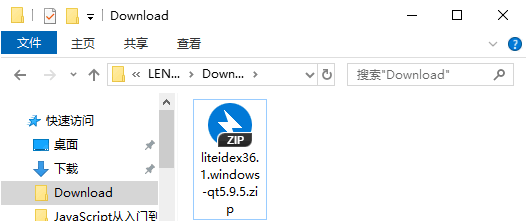
LiteIDE 的压缩文件
LiteIDE 的压缩文件
将压缩包解压到任意目录，这里我们将压缩包解压到了 D 盘，解压后会得到一个名为“liteide”的文件夹。
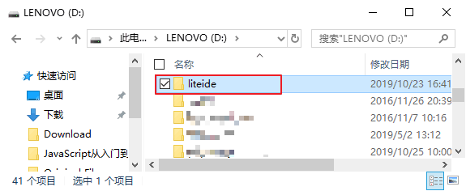
解压 LiteIDE
解压 LiteIDE
进入 LiteIDE 文件夹中的 bin 文件夹，可以在 bin 文件夹中找到名为“liteide.exe”的文件，它就是 LiteIDE 的启动程序。
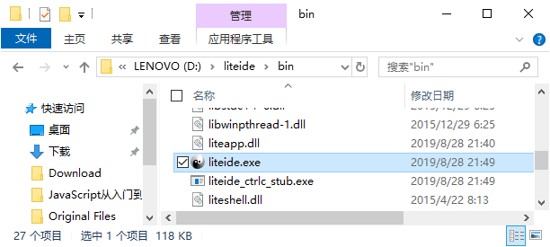
LiteIDE 启动程序
LiteIDE 启动程序
双击运行“liteide.exe”就可以正常打开 LiteIDE 了，为了方便以后的使用，建议大家在桌面创建 LiteIDE 的快捷方式（在“liteide.exe”上右键→“发送到”→“桌面快捷方式”）。
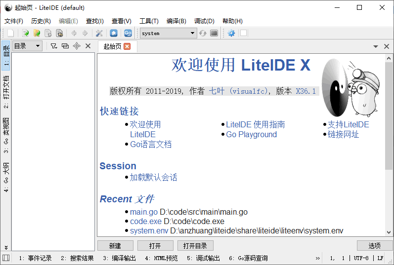
LiteIDE 起始页
LiteIDE 起始页
配置 LiteIDE
修改当前的运行环境，需要根据系统的不同设置对应的运行环境，因为我们使用的是 64 位的 Windows 系统，所以这里需要将运行环境设置为 Win64 。
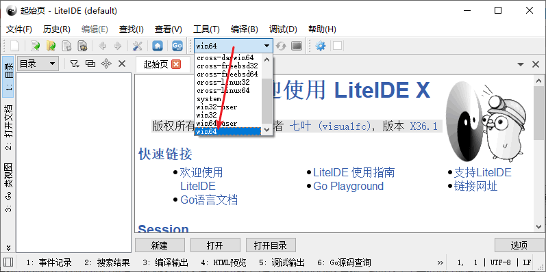
修改当前运行环境
修改当前运行环境
配置当前运行环境，点击“工具”，在下拉菜单中选择“编辑当前环境”，如下图所示。
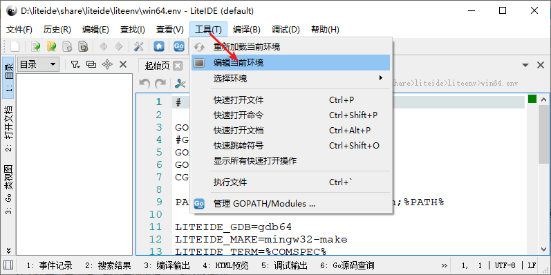
编辑当前环境
编辑当前环境
在打开的文件中找到“GOROOT=xxx”，并将其修改为环境变量中 GOROOT 对应的值，如下所示。（注意：修改完成后记得保存）
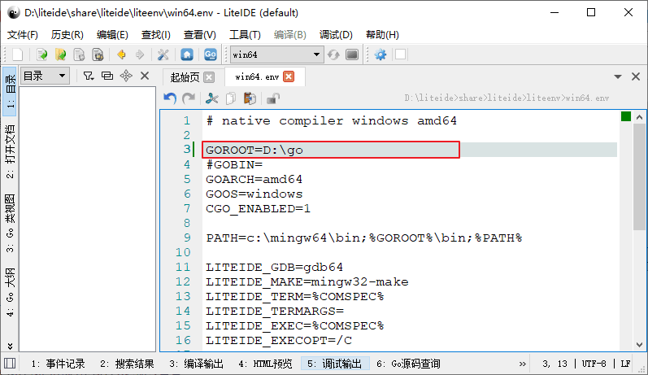
编辑Go语言开发包的安装目录
编辑Go语言开发包的安装目录
如果记不清了也没关系，可以在 CMD 窗口中使用
go env命令查看 GOROOT 对应的值。
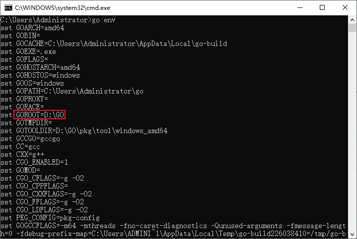
使用go env命令查看Go语言开发包的相关信息
使用go env命令查看Go语言开发包的相关信息
添加自定义 GOPATH，在“工具”菜单中找到“管理 GOPATH/Modules...”，如下图所示。（注意：因为系统中已经包含了一个默认的 GOPATH，所以此步骤不是必须的，了解即可）
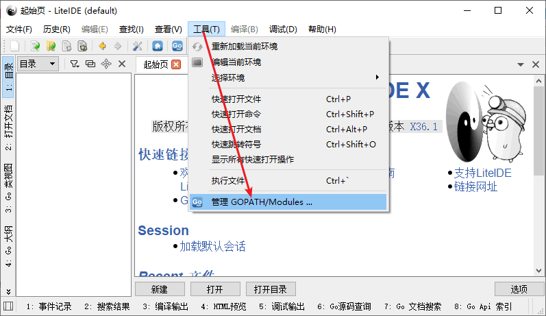
管理 GOPATH
管理 GOPATH
在弹出的窗口中找到“使用自定义 GOPATH”，将其勾选，然后点击“添加目录”，选择合适的目录即可。
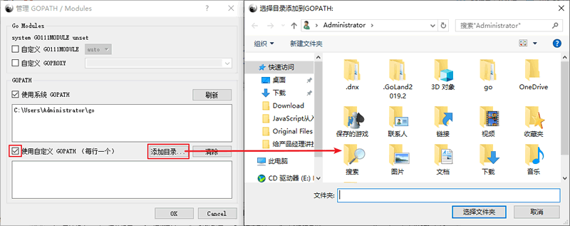
添加自定义 GOPATH
添加自定义 GOPATH
新建项目
到这里 LiteIDE 已经基本上配置完成了，下面我们就来创建一个项目来测试一下。首先，在“文件”菜单中选择“新建”，在弹出的窗口中，选择系统默认的 GOPATH 路径，模板选择“Go1 Command Project”，最后填写项目名称，并选择合适的目录，确认无误后点击“OK”。
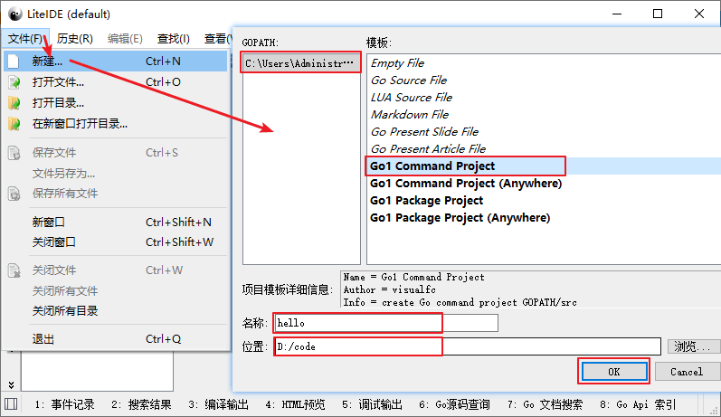
新建项目
新建项目
新建好的项目是下面这样的，编辑器自动为我们创建了两个文件，并在“main.go”中生成了简单的代码。
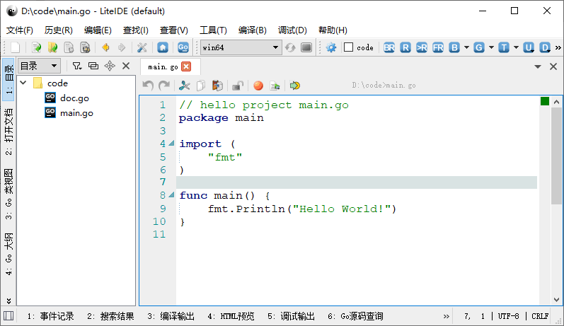
新建完成的项目
新建完成的项目
点击编辑器右上方的“BR”按钮，就可以运行“main.go”中的代码，同时会在当前目录下生成一个 .exe 的可执行文件。
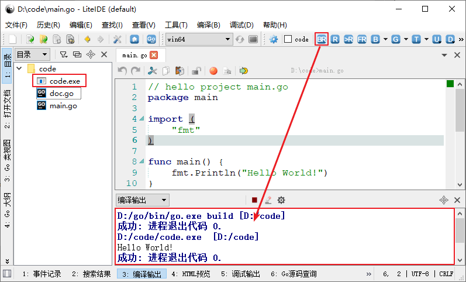
运行程序
运行程序
关注公众号「站长严长生」，在手机上阅读所有教程，随时随地都能学习。内含一款搜索神器，免费下载全网书籍和视频。

微信扫码关注公众号